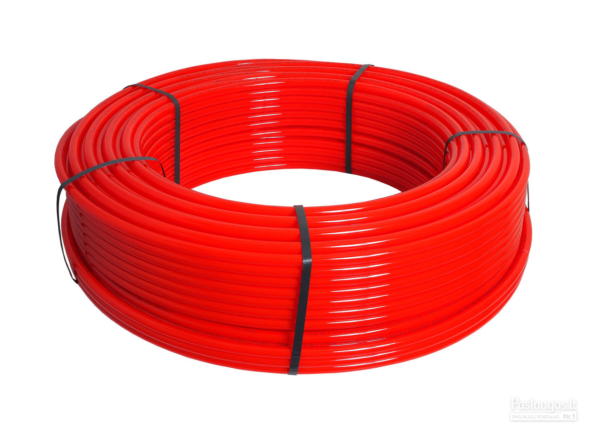

Santechnikos meistrai - visi santechnikos darbai
Santechnikos meistrai
Meniu
Apie mus Paslaugos Filtrai Kanalizacija Katilinės Kondicionieriai Lietaus kanalizacija SANTECHNIKA Šildymo sistemos Šilumos siurbliai Vamzdynų renovacija Vandentiekis Vėdinimas Dūmtraukiai, jų įrengimo pažymos Patarimai Kontaktai Dūmtraukiai, jų įrengimo pažymos Slapukų politikaSvarbiausius darbus patikėkite mūsų profesionalams!
Norite mūsų paklausti?
Susidomėjote santechnikos profesionalais? Reikalinga mūsų pagalba ar konsultacija? Užpildykite žemiau esančią formą ar rašykite el. paštu. Visada laukiame jūsų klausimų ir pasiūlymų.
Norite įsigyti prekę?
Santechninę produkciją perkame iš didžiausių tiekėjų, todėl jums galime pasiūlyti gerą nuolaidą. Užpildykite žemiau esančią formą apie norimą įsigyti prekę ir mes su jumis susisieksime.
Mūsų paslaugos
Filtrai
Padarome vandens tyrimus ir parenkame optimaliausius filtrus. Nukalkinimo filtrai. Nugeležinimo filtrai. Montavimas bei aptarnavimas. Plačiau
Kanalizacija
Visi vidaus bei lauko nuotekų tinklai: magistralinių tinklų statyba su pridavimu; įvadų įrengimas su pridavimu; nulinės kanalizacijos įrengimas; pilna vidaus nuotekų sistema; valymo įrenginių statyba. Lietaus kanalizacijos įrengimas, remontas. Drenažo sistemų iškėlimas, remontas. Plačiau
Katilinės
Montuojame bei projektuojame šias katilines: Kieto kuro katilinės. Granulinės katilinės. Skysto kuro katilinės. Dujinės katilinės. Plačiau
Kondicionieriai
Kondicionierių parinkimas, sumontavimas. Garantinis bei pogarantinis aptarnavimas, konsultacijos. Plačiau
Lietaus kanalizacija
Lietaus kanalizacijos projektavimas. Įrengimas pagal projektą bei pridavimas institucijom. Drenažo sistemų projektavimas. Įrengimas pagal projektą bei pridavimas institucijom. Sklypo drenažo įrengimas be projektavimo. Plačiau
Santechnika
Parduodame bei montuojame santechnikos prietaisus. Plačiau
Šildymo sistemos
Įvairių šildymo sistemų projektavimas bei įrengimas. Grindinio šildymo sistemos Radiatorinio šildymo sistemos. Konvektorinis šildymas. Plačiau
Šilumos siurbliai
Šilumos siurblių parinkimas, sumontavimas. Garantinis bei pogarantinis aptarnavimas. Plačiau
Vamzdynų renovacija
Keičiame visus atitarnavusius namo vamzdynus bei radiatorius. Šildymo, Vandentiekio – karšto, šalto, cirkuliacinius, Nuotekų. Plačiau
Vandentiekis
Lauko vandentiekis. Magistraliniai tinklai Įvadai į namus, dokumentacijos tvarkymas, pridavimas Vandens gręžiniai iki 150m gylio, siurblių pajungimas. Sutvarkome dokumentaciją, išduodame gręžinio pasą. Vidaus vandentiekis. Magistraliniai tinklai. Vidaus tinklai iki prietaisų, filtrų parinkimas bei pajungimas. Plačiau
Vėdinimas
Vėdinimo įrenginių parinkimas – pardavimas. Montavimas. Garantinis bei pogarantinis aptarnavimas. Plačiau
Dūmtraukių įrengimas
Dūmtraukių parinkimas – pardavimas. Montavimas. Įrengimo pažymos. Plačiau Santechnikos meistrai atlieka visus santechnikos darbus jau ne vienerius metus.
Klientams siūlome profesionalią bei išsamią konsultaciją, įrenginių parinkimą, kokybišką šildymo, šaldymo bei vėdinimo sistemų montavimą, bei patrauklią kainodarą.
diTerma, UAB
Smilčių g. 7, Pamaišupio km., Kauno raj.
Įmonės kodas: 303454413
PVM mokėtojo kodas: LT100009579311
Registro tvarkytojas: VĮ Registrų centras
8 672 70245
Vilniaus regionas
8 679 08079
Kauno regionas
Visos teisės saugomos © 2020 Santechnikos meistrai Svetainėje naudojami slapukai, kurie padeda užtikrinti jums teikiamų paslaugų kokybę. Išjungdami šį pranešimą arba toliau naršydami šioje svetainėje sutinkate su mūsų slapukų naudojimo politika. Sutinku Slapukų politika